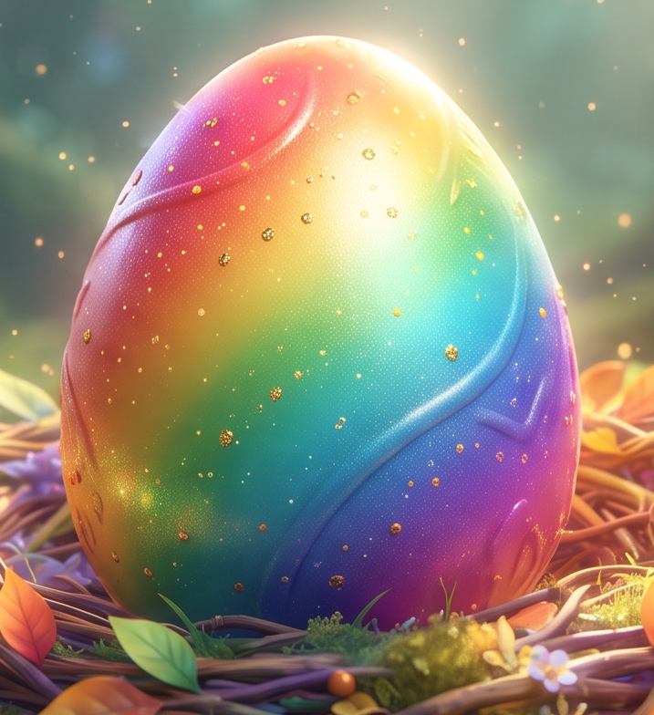

🌟 小一英文文法大冒險Grammar 🌟

快完成關卡,消滅壞人
🚀 學習進度 Progress Record
🗑️ 清除記錄
合格(10分以上)點亮小星星⭐，挑戰全對(20分)獲得閃耀大星星🌟！
請選擇挑戰關卡：
🔙 返回小朋友學習大冒險
關卡名稱
🔊
這裡會顯示文法重點。
💡 常見例子 (Examples)：
🚀 Start the game
🏠 先回主頁
題 1/20
淺程度
分數: 0
Question loading...
🔊
💡 文法小提示：
🔊
這裡會顯示提示。
⏭️ Move to next question
⬅️ 上一頁
🏠 回到主頁
下一頁 ➡️
🎉 關卡結算 🎉
⭐⭐⭐
你的分數是：20 / 20
👇 答題總結：點擊紅色的 ❌ 題目，可以重新挑戰哦！
🔄 重新挑戰這一關
🏠 選擇其他關卡